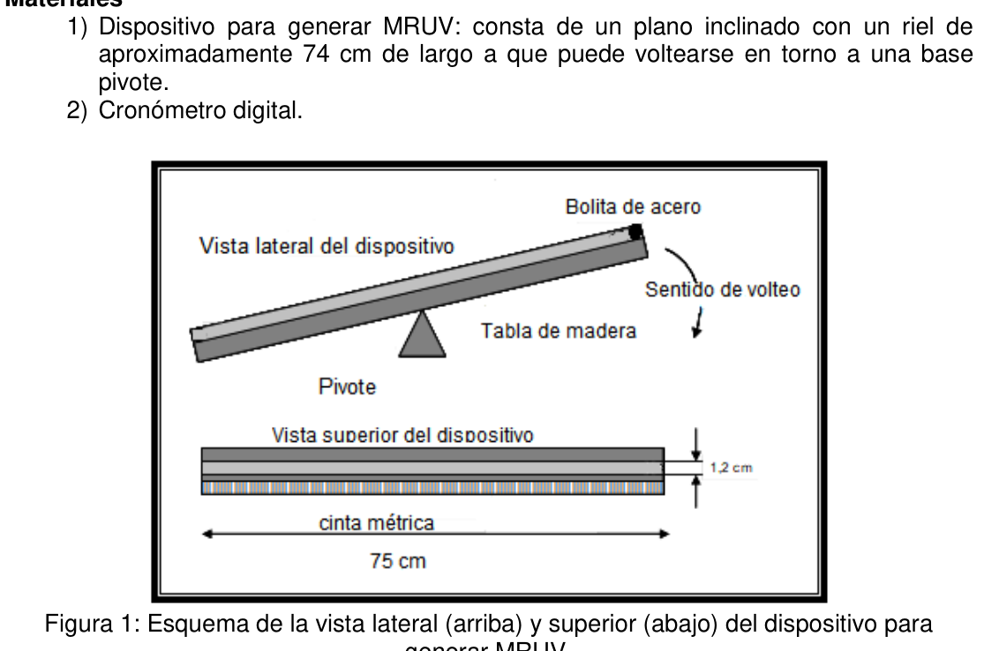
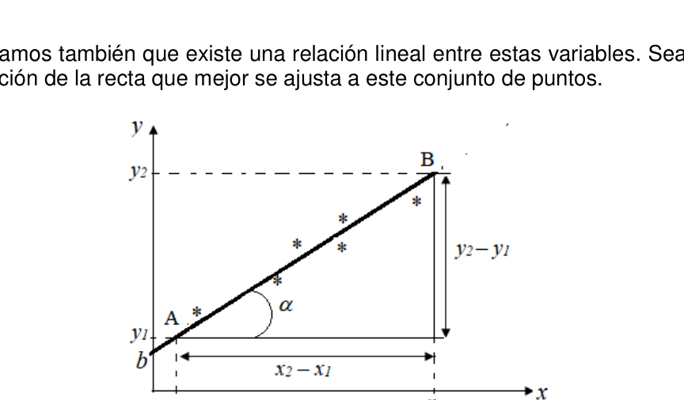

PE35. ESETP N° 703 José Toschke. Puerto Madryn, Chubut.
Objetivos
Determinar la aceleración de un móvil que viaja por un plano inclinado. (Plano de Galileo)
Introducción El desplazamiento de un móvil sobre un plano inclinado es una de las formas más sencillas de reproducir un Movimiento Rectilíneo Uniforme Variado. (de aquí en adelante MRUV). Esta práctica fue empleada por Galileo para estudiar la dependencia temporal de la distancia recorrida por el móvil. En un movimiento acelerado uniformemente ya el móvil no recorre distancias iguales en tiempos iguales, lo que si ocurre es en tiempos iguales, adquiere iguales incrementos de rapidez”.
Si llamamos v(t) a la coordenada de la velocidad del móvil en la vía recta para un instante
t, v0 a la velocidad inicial que dicho móvil tiene en el momento t0, en el cual empezamos a
estudiar el problema, y a es su aceleración, puede describirse el movimiento de dicho
móvil mediante la ecuación horaria (Sears et al., 2009):
𝑣(𝑡) = 𝑣0 + 𝑎 (𝑡− 𝑡0) (1)
Si tomamos t0=0 la ecuación (1) queda: 𝑣(𝑡) = 𝑣0 + 𝑎 𝑡 (2)
Por lo tanto la ecuación (2) matemáticamente puede modelarse con una función lineal del tipo: t m b t f (3)
Donde b es la ordenada al origen (velocidad inicial del móvil) y m la pendiente (velocidad del móvil)
Materiales
- Dispositivo para generar MRUV: consta de un plano inclinado con un riel de aproximadamente 74 cm de largo a que puede voltearse en torno a una base pivote.
- Cronómetro digital.
Figura 1: Esquema de la vista lateral (arriba) y superior (abajo) del dispositivo para generar MRUV.
OAF 2018 - 179 Observando la Figura 1 puede deducirse que al instante en que se voltea el dispositivo se produce el descenso de la bolilla que circula de izquierda a derecha del esquema.
Procedimiento. Estimación de las velocidades.
- Sobre la cinta métrica ubicada a lo largo de la madera marcar 10 posiciones separadas cada 5 cm.
¿Qué consecuencia tendrá en el experimento marcar una mayor cantidad de posiciones? ¿Y marcar una menor cantidad de posiciones?
- Posicione la bolilla en el extremo derecho del dispositivo tubo (ver Figura 1 vista lateral)
- Con cronómetro en mano voltee rápidamente el dispositivo (haciendo pivotear la tabla sobre su base) y accione el cronómetro cuando la bollilla comience a moverse.
- Mida los tiempos en que el la bolilla pasa por cada una de las marcas realizadas en la cinta.
- Repita este procedimiento al menos 5 veces y tome como valor medido de tiempo para cada posición el promedio de los tiempos obtenidos en cada repetición.
¿Qué consecuencia tendrá en el experimento iniciar el cronómetro simultáneamente al momento de que la bolilla comience moverse? ¿Qué puede decir de la velocidad de la bolilla en los primeros instantes del movimiento?
- Registre los datos confeccionando una tabla similar a la Tabla 1 (8)
x (cm) t1 (s) t2 (s) t3 (s) t4 (s) t5 (s) tprom (s) 0 0 0 0 0 0 0 5
10
..
Tabla 1: Tabla ejemplo de posiciones de la bollillas y tiempos medidos.
- Con los datos obtenidos estime la velocidad y escriba la ecuación horaria de posición. (3)
- Realice el grafico de la velocidad en función del tiempo. (1)
- Confeccione un grafico de la posición en función del tiempo y realice una recta de ajuste. (3).
- Determine el valor de la pendiente y de la ordenada de dicha recta. (2)
- Analice los datos (ver Apéndice) y calcular la aceleración. (3)
Bibliografía Sears, F.W., Zemansky, M.Z., y Young H.D. (2009). Física Universitaria. Volumen 1, Decimosegunda edición, Pearson Educación, México.
Apéndice Método de los mínimos cuadrados Supongamos que al realizar un experimento se obtienen los siguientes pares de valores para las variables xi e yi x1;y2 x2;y2 :: :: xn;yn
180 - OAF 2018 y supongamos también que existe una relación lineal entre estas variables. Sea y = mx + b la ecuación de la recta que mejor se ajusta a este conjunto de puntos.
Figura 1.2: Determinación gráfica de los parámetros m y b de la recta que relaciona las variables x e y.
Veamos ahora qué pasos han de seguirse para hallar una ecuación que nos permita calcular m y b de forma analítica. Sean: 𝑦𝑖= 𝑚𝑥𝑖+ 𝑏 𝑦𝑖, = 𝑚𝑥𝑖+ 𝑏 los valores experimentales obtenidos y sean los valores que se obtienen en los puntos de abscisa xi utilizando la recta de ajuste. La diferencia nos dará una idea de la calidad del ajuste. Si esta diferencia es pequeña el ajuste será bueno mientras que si esta diferencia es grande, los valores calculados mediante la recta diferirán mucho de los resultados experimentales y el ajuste será malo. Pues bien, los parámetros m y b para la recta de ajuste mediante el método de mínimos cuadrados se obtiene exigiendo que el error cuadrático medio definido como: ∑𝑟2𝑖 𝑛 𝑖=1 = ∑[𝑦𝑖 – (𝑚 𝑥𝑖+ 𝑏)]2 𝑛 𝑖=1
sea mínimo. Para ello, debe cumplirse que: 𝜕𝑟𝑖 𝜕𝑚= 0 𝜕𝑟𝑖 𝜕𝑏= 0 lo que proporciona las siguientes ecuaciones para el cálculo de los parámetros m y b de la recta de ajuste por mínimos cuadrados: 𝑚= 𝑛∑𝑥𝑖𝑦𝑖−∑𝑥𝑖∑𝑦𝑖 𝑛∑𝑥2𝑖−(∑𝑥𝑖) 2
𝑏= ∑𝑥2𝑖 ∑𝑦𝑖−∑𝑥𝑖∑𝑥𝑖𝑦𝑖 𝑛∑𝑥2𝑖− (∑𝑥𝑖)2
El error en la determinación de los parámetros m y b, m y b, respectivamente, puede determinarse mediante las siguientes ecuaciones: 𝜎𝑚= √∑(𝑦𝑖−(𝑚𝑥𝑖+ 𝑏)) 2 𝑛−2
𝑛 𝑛∑𝑥𝑖2 − (∑𝑥𝑖)2
𝜎𝑚= √∑(𝑦𝑖− (𝑚𝑥𝑖+ 𝑏)) 2 𝑛−2
∑𝑥𝑖2 𝑛∑𝑥𝑖2 −(∑𝑥𝑖)2 Finalmente, es conveniente tener algún parámetro que nos informe si los valores obtenidos experimentalmente están alineados o no sin que sea necesario representarlos.
OAF 2018 - 181 Existe un parámetro denominado coeficiente de regresión r de Pearson, cuya expresión viene dada por: 𝑟= 𝑛∑𝑥𝑖𝑦𝑖−∑𝑥𝑖∑𝑦𝑖 √[𝑛∑𝑥2𝑖 − (∑𝑥𝑖)2] [𝑛∑𝑦2 𝑖−(∑𝑦𝑖)2]
y que nos informa acerca de lo bueno que es el ajuste. Para un conjunto de puntos perfectamente alineados, el módulo de este coeficiente valdrá uno. A medida que los puntos se alejan de la línea recta, el módulo de este coeficiente disminuye. Por lo tanto, este coeficiente de regresión nos permite cuantificar lo buena que es la recta de regresión. Cuanto más próximo a la unidad esté el módulo de este coeficiente, tanto más alineados estarán los puntos representados y mayor será la validez de la recta de regresión de mínimos cuadrados.


Topic: Newtonian Mechanics Metodi: Experimental Data Analysis, Graph Linearization, Curve Fitting Competenze: Physical Reasoning, Experimental Data Analysis, Mathematical Modeling Objects: Inclined Plane, Ball Fonte: Testo (PDF) — p.5
PE35. ESETP N° 703 José Toschke. Port Madryn, Chubut.
Obiettivi Determinare l’accelerazione di un mobile che viaggia in un piano inclinato. (Piano di Galileo)
Introduzione Il spostamento di un cellulare su un piano inclinato è uno dei modi più semplici per riprodurre un Movimento Rettile Uniforme Variabile. (da qui in poi) MRUV). Questa pratica è stata utilizzata da Galileo per studiare la dipendenza temporale da la distanza percorsa dal cellulare. In un movimento accelerato uniformemente il mobile non percorre le stesse distanze nello stesso tempo, e se succede lo fa allo stesso tempo. si ottiene uguale incremento di velocità.
Se chiamiamo v(t) la coordinata della velocità del cellulare in rotta retta per un istante t, v0 alla velocità iniziale che questo cellulare ha al momento t0, in cui iniziamo a studiare il problema, e a è la sua accelerazione, si può descrivere il movimento di detto La Commissione ha adottato una decisione che prevede che il programma di lavoro sia stato adottato in base alle informazioni disponibili. 𝑣(𝑡) = 𝑣0 + 𝑎 (𝑡− 𝑡0) (1)
Se prendiamo t0=0 l’equazione (1) rimane: 𝑣(𝑡) = 𝑣0 + 𝑎 𝑡 (2)
L’equazione (2) può quindi essere matematicamente modellata con una funzione lineare di tipo: t m b t f (3)
Dove b è ordinata all’origine (velocità iniziale del cellulare) e m la pendenza (velocità del cellulare)
Materiali
- Dispositivo per generare MRUV: è costituito da un piano inclinato con un riel di circa 74 cm di lunghezza che può essere girata attorno a una base
- Piovete.
- Cronometro digitale.
Figura 1: Schema della vista laterale (alto) e superiore (basso) del dispositivo per generare MRUV.
OAF 2018 - 179 La figura 1 mostra che il momento in cui si gira il dispositivo si produce la discesa della ciotola che si muove da sinistra a destra dello schema.
Procedura.
- Velocità stimata.
- Sul nastro metrico lungo il legno segnare 10 posizioni. separati ogni 5 cm.
Che conseguenza avrà l’esperimento di segnare un maggior numero di posizioni? E segnare un minor numero di posizioni?
- Posizionare il bollo alla fine destra del dispositivo tubo (vedere figura 1 vista (laterale)
- Con cronometro in mano, girare rapidamente il dispositivo (facendo piovare la La pianta è sulla base della pianta e accende il cronometro quando la bolla inizia a
- Si muove.
- Misura i tempi in cui la boccetta passa per ogni marchio realizzato
- sul nastro.
- Ripeti questa procedura almeno 5 volte e prendi come valore misurato di tempo per ogni posizione la media dei tempi ottenuti in ogni posizione Ripetizione.
Che conseguenza avrà l’esperimento di avviare il cronometro contemporaneamente al Quando la ciotola comincia a muoversi? Cosa può dire della velocità della Boiling nei primi istanti del movimento?
- Registrare i dati con una tabella simile a quella di Tabella 1 (8)
x (cm) t1 (s) t2 (s) t3 (s) t4 (s) t5 (s) tprom (s) 0 0 0 0 0 0 0 5
10
..
Tabella 1: Esempio di posizioni delle palline e tempi misurati.
- Con i dati ottenuti, stima la velocità e scrivi l’equazione oraria di posizione. (3)
- Fa’ il grafico della velocità in base al tempo. (1)
- Configgere un grafico della posizione in base al tempo e fare una retta di regolazione. (3).
- Determina il valore della pendenza e dell’ordine di tale retta. (2)
- Analizzare i dati (vedi Appendice) e calcolare l’accelerazione. (3)
Bibliografia Sears, F.W., Zemansky, M.Z., e Young H.D. (2009). - Fisica universitaria. Volume 1, Decimo-seconda edizione, Pearson Education, Messico.
Appendice Metodo dei minimi quadrati Supponiamo che quando si fa un esperimento si ottengano le seguenti coppie di valori per le variabili xi e yi x1;y2 x2;y2 :: :: xn;yn
180 - OAF 2018 E supponiamo anche che ci sia una relazione lineare tra queste variabili. Se e = mx + b l’equazione della retta che meglio si adatta a questo insieme di punti.
Figura 1.2: Determinazione grafica dei parametri m e b della retta che collega le variabili x e y.
Vediamo ora quali passi devono essere presi per trovare un’equazione che ci permette di Calcolare m e b in modo analitico. Sean: gi= mxi+ b ci, = mxi+ b i valori sperimentali ottenuti e sono i valori ottenuti nei punti di abcissa xi usando la retta di regolazione. La differenza ci darà un’idea della qualità dell’adattamento. Se questa differenza è piccola, Il corretto sarà buono mentre se questa differenza è grande, i valori calcolati La correzione è molto diversa dai risultati sperimentali e l’aggiustamento è scadente. I parametri m e b per la retta di regolazione utilizzando il metodo dei minimi quadrati si ottiene richiedendo che l’errore quadratico medio definito come: ∑𝑟2𝑖 𝑛 𝑖=1 = ∑[𝑦𝑖 – (𝑚 𝑥𝑖+ 𝑏)]2 𝑛 𝑖=1
- Non è così. Per questo, è necessario che: 𝜕𝑟𝑖 𝜕𝑚= 0 𝜕𝑟𝑖 𝜕𝑏= 0 che fornisce le seguenti equazioni per il calcolo dei parametri m e b di il retto di regolazione per minimi quadrati: m= nxiyi−xiyi 𝑛∑𝑥2𝑖−(∑𝑥𝑖) 2
b= x2i yi−xixiyi 𝑛∑𝑥2𝑖− (∑𝑥𝑖)2
L’errore nel determinare i parametri m e b, m e b, rispettivamente, può essere determinare mediante le seguenti equazioni: (sm= √(yi−(mxi+ b)) 2 𝑛−2
𝑛 𝑛∑𝑥𝑖2 − (∑𝑥𝑖)2
(mxi+ b)) 2 𝑛−2
∑𝑥𝑖2 𝑛∑𝑥𝑖2 −(∑𝑥𝑖)2 Infine, è opportuno avere un parametro che ci informi se i valori le prove ottenute sperimentalmente sono allineate o meno senza essere necessariamente rappresentate.
OAF 2018 - 181 C’è un parametro chiamato coefficiente di regressione di Pearson r, la cui espressione viene data da: 𝑟=
- il numero di persone che hanno il diritto di partecipare √[𝑛∑𝑥2𝑖 − (∑𝑥𝑖)2] [𝑛∑𝑦2 𝑖−(∑𝑦𝑖)2]
e ci informa di quanto sia bello l’adeguamento. Per un insieme di punti Perfetto allineato, il modulo di questo coefficiente valerà uno. Come i Se i punti si allontanano dalla linea retta, il modulo di questo coefficiente diminuisce. Quindi, Questo coefficiente di regressione ci permette di quantificare quanto sia buona la retta di Regressione. Più vicino all’unità è il modulo di questo coefficiente, più i punti rappresentati saranno allineati e maggiore sarà la validità della retta di Regressione di minimi quadrati.
Topic: Newtonian Mechanics Metodi: Experimental Data Analysis, Graph Linearization, Curve Fitting Competenze: Physical Reasoning, Experimental Data Analysis, Mathematical Modeling Objects: Inclined Plane, Ball Fonte: Testo (PDF) — p.5
PE35. The Commission has also adopted a proposal for a Regulation (EC) No 1233/2006. Port Madryn, Chubut.
Objectives Determine the acceleration of a mobile moving on an inclined plane. (Galileo’s plan)
The first is the introduction. Moving a mobile phone over an inclined plane is one of the most common ways to move a mobile phone. simple to reproduce a varied uniform rectal motion. (from now on MRUV). This practice was used by Galileo to study the temporal dependence of the distance travelled by the mobile phone. In a uniformly accelerated motion the mobile It doesn’t travel the same distances at the same time, which if it does, it’s at the same time. The rate of change in the speed of the vehicle is equal to the rate of change in the speed of the vehicle.
If we call v(t) the coordinate of the mobile’s speed in the straight line for an instant t, v0 to the initial speed that that mobile has at the time t0, at which we start to The problem is a, and a is its acceleration, and the motion of the problem can be described. The following table shows the results of the study: 𝑣(𝑡) = 𝑣0 + 𝑎 (𝑡− 𝑡0) (1)
If we take t0=0, the equation (1) is: 𝑣(𝑡) = 𝑣0 + 𝑎 𝑡 (2)
Thus the equation (2) can be mathematically modeled with a linear function of type: t m b t f (3)
Where b is the ordered at the origin (mobile’s initial speed) and m the slope (speed) (from the mobile phone)
Materials
- MRUV generating device: consists of an inclined plane with a rail of approximately 74 cm long which can be turned around a base I’m going to spin. The number of days of the year is fixed.
Figure 1: Sketch of the side view (top) and upper (bottom) of the device for The vehicle is capable of generating MRUVs.
The Commission shall adopt implementing acts in accordance with Article 21 of the Financial Regulation. From the figure 1 it can be inferred that the moment the device is turned it is It produces the descent of the bowl that circulates from left to right of the diagram.
The procedure. Estimate of the speeds.
- On the metric tape located along the wood mark 10 positions separated every 5 cm.
What will be the effect of the experiment on the number of positions? And score a smaller number of positions?
- Place the bowl on the right end of the tube device (see Figure 1 view side)
- With a chronometer in hand turn the device quickly (turning the table on its base) and turn on the timer when the bubble starts to move.
- Measure the times the bucket passes through each of the marks made on the tape.
- Repeat this procedure at least 5 times and take as a measured value time for each position the average of the times obtained in each Repeat.
What will be the consequence of the experiment in starting the chronometer simultaneously with the the moment the bowl starts moving? What can you tell us about the speed of the Boiling in the first moments of the movement?
- Record the data by making a table similar to Table 1 (8)
x (cm) t1 (s) t2 (s) t3 (s) t4 (s) t5 (s) tprom (s) 0 0 0 0 0 0 0 5
10
..
Table 1: Give an example of the positions of the balls and the times measured.
- With the data obtained, estimate the speed and write the time equation of position. (3)
- Make the speed chart based on time. (1)
- Make a chart of the position based on time and make a straight line of adjustment. (3).
- Determine the value of the slope and the order of that straight. (2)
- Analyze the data (see Appendix) and calculate the acceleration. (3)
The bibliography Sears, F.W., Zemansky, M.Z., and Young H.D. (2009). I’m a college physics major. The following is the list of the countries of the European Union: The twelfth edition, Pearson Education, Mexico.
Appendix to the The method of least squares Suppose that by performing an experiment you get the following value pairs for variables xi and yi x1;y2 x2;y2 :: :: xn;yn
The Commission shall adopt delegated acts in accordance with Article 21 of this Regulation. And let’s also assume that there’s a linear relationship between these variables. If y = mx + b the equation of the straight line that best fits this set of points.
Figure 1.2: Graphical determination of parameters m and b of the straight line relating the variables x and y.
Let’s see now what steps we have to take to find an equation that allows us to do this. calculate m and b analytically. Sean: Yi = mxi+ b Yi, = mxi+ b The experimental values obtained and the values obtained at the points of The following table shows the number of the following: The difference will give us an idea of the quality of the fit. If this difference is small the Adjustment will be good while if this difference is large, the calculated values The results of the experiment will differ greatly from those of the experimental results and the adjustment will be poor. Well, the parameters m and b for the adjustment line using the minimum method squares is obtained by requiring the mean square error defined as: ∑𝑟2𝑖 𝑛 𝑖=1 = ∑[𝑦𝑖 – (𝑚 𝑥𝑖+ 𝑏)]2 𝑛 𝑖=1
It’s minimal. To this end, it must be complied with that: 𝜕𝑟𝑖 𝜕𝑚= 0 𝜕𝑟𝑖 𝜕𝑏= 0 which provides the following equations for calculating parameters m and b of the adjustment line by minimum squares: The following is the list of the countries of the European Union: 𝑛∑𝑥2𝑖−(∑𝑥𝑖) 2
The following is the list of the countries of the European Union: 𝑛∑𝑥2𝑖− (∑𝑥𝑖)2
The error in determining the parameters m and b, m and b, respectively, can be be determined by the following equations: The following table shows the results of the evaluation: 2 𝑛−2
𝑛 𝑛∑𝑥𝑖2 − (∑𝑥𝑖)2
The following table shows the results of the evaluation: 2 𝑛−2
∑𝑥𝑖2 𝑛∑𝑥𝑖2 −(∑𝑥𝑖)2 Finally, it is useful to have some parameter that tells us whether the values The results of the experiment are either aligned or not without the need to represent them.
The Commission shall adopt delegated acts in accordance with Article 21 of the Financial Regulation. There is a parameter called Pearson’s regression coefficient r, whose expression is given by: 𝑟= The Commission shall adopt implementing acts in accordance with Article 21 of this Regulation. √[𝑛∑𝑥2𝑖 − (∑𝑥𝑖)2] [𝑛∑𝑦2 𝑖−(∑𝑦𝑖)2]
And it tells us about how good the fit is. For a set of points If you’re perfectly aligned, the module of this coefficient will be one. As they points are removed from the straight line, the modulus of this coefficient decreases. Therefore, This regression coefficient allows us to quantify how good the straight line is. The rate of regression. The closer the module of this coefficient is to the unit, the more The points represented are aligned and the greater the validity of the straight line. The number of times the number of times the number of times the number of times the number of times the number of times the number of times the number of times the number of times the number of times the number of times the number of times the number of times the number of times the number of times the number of times the number of times the number of times the number of times the number of times the number of times the number of times the number of times the number of times the number of times the number of times the number of times the number of times the number of times the number of times the number of times the number of times the number of times the number of times the number of times the number of times the number of times the number of times the number of times the number of times the number of times the number of times the number of times the number of times the number of times the number of times the number of times the number of times the number of times the number of times the number of times the number of times the number of times the number of times the number of times the number of times the number of times the number of times the number of times the number of times the number of times the number of times the number of times the number of times the number of times the number of times the number of times the number of times the number of times the number of times the number of times the number of times the number of times the number of times the number of times the number of times the number of times the number of times the number of times the number of times the number of times the number of times the number of times the number of times the number of times the number of times the number of times the number of times the number of times the number of times the number of times the number of times the number of times the number of times the number of times the number of times the number of times the number of times the number of times the number of times the number of times the number of times the number of times the number of times the number of times the number of times the number of times the number of times the number of times the number of times the number of times the number of times the number of times the number of times the number of times the number of times the number of
Topic: Newtonian Mechanics Metodi: Experimental Data Analysis, Graph Linearization, Curve Fitting Competenze: Physical Reasoning, Experimental Data Analysis, Mathematical Modeling Objects: Inclined Plane, Ball Fonte: Testo (PDF) — p.5